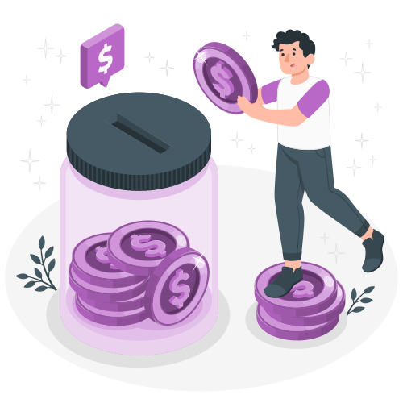

Use Cases
Blockchain technology has numerous applications across various industries. Here, we explore the diverse and transformative applications of blockchain technology. From enhancing supply chain transparency to revolutionizing financial services, blockchain is driving innovation across multiple industries. Discover how this groundbreaking technology is being implemented to solve real-world challenges and unlock new opportunities for businesses and individuals alike. Join us as we delve into the practical and impactful uses of blockchain.
Finance
Blockchain technology is revolutionizing the finance industry by enabling faster, more secure transactions. With blockchain, financial institutions can reduce fraud, increase transparency, and improve efficiency. Smart contracts automate complex financial agreements, while decentralized finance (DeFi) platforms offer innovative solutions for lending, borrowing, and trading, making financial services more accessible to everyone.
Supply Chain
In the supply chain sector, blockchain provides unparalleled transparency and traceability. By recording each step of the supply chain on an immutable ledger, businesses can ensure the authenticity and origin of products, reduce counterfeiting, and enhance efficiency. Real-time tracking of goods reduces delays and disputes, ultimately leading to a more streamlined and trustworthy supply chain process.
Identity Management
Blockchain-based identity management systems offer a secure and decentralized way to manage personal information. By leveraging blockchain, individuals can control their own identities, reducing the risk of identity theft and fraud. Organizations can verify identities more efficiently, ensuring privacy and compliance with data protection regulations. This technology simplifies processes like onboarding, authentication, and access control.
Healthcare and Voting Systems
Healthcare
Blockchain technology in healthcare ensures the secure and efficient management of patient data. By providing a tamper-proof ledger, blockchain helps maintain the integrity and privacy of medical records. It facilitates seamless data sharing among healthcare providers, improving patient outcomes and reducing administrative costs. Additionally, blockchain can streamline supply chain management for pharmaceuticals, ensuring the authenticity of medicines. This technology can also enhance the traceability of clinical trials, ensuring the accuracy and reliability of trial results. Furthermore, blockchain-based smart contracts can automate insurance claims and payments, reducing fraud and speeding up the reimbursement process. Blockchain can also be used to create a unified patient identity, allowing patients to have control over their health data and share it with multiple healthcare providers securely. The technology supports telemedicine by ensuring secure and transparent remote consultations and data exchanges. Blockchain enables the tracking of medical devices from manufacture to end-use, enhancing safety and compliance. Additionally, it can facilitate global health initiatives by providing a reliable and secure way to share health information across borders.
Voting Systems
Blockchain offers a transparent and secure solution for voting systems. By recording votes on an immutable ledger, it guarantees the integrity and transparency of the electoral process. Voters can verify that their votes were counted accurately without compromising their privacy. Blockchain-based voting systems reduce the risk of fraud and enhance trust in democratic processes. Additionally, the decentralized nature of blockchain ensures that no single entity can manipulate the voting data. This technology can also facilitate remote voting, making it more accessible for citizens who cannot physically visit polling stations. Furthermore, blockchain can streamline the vote tallying process, providing faster and more accurate election results. It enhances accessibility by supporting multiple languages and accommodating diverse voting needs, including those with disabilities. The use of smart contracts on the blockchain can automate compliance with voting regulations and legal requirements, reducing administrative burdens. Blockchain technology also allows for the secure archiving of voting data, preserving historical records and ensuring accountability. Additionally, it can integrate with existing electoral systems to provide a hybrid approach, leveraging blockchain's strengths while maintaining established voting infrastructures.
Additional Use Cases
Blockchain technology's versatility extends beyond the commonly known applications. It can be used in real estate for secure property transactions, in the energy sector for efficient energy trading, and in intellectual property management to protect creators' rights. Other emerging use cases include gaming, where blockchain ensures fair play and digital asset ownership, and in charitable donations, where it enhances transparency and accountability. Additionally, blockchain is revolutionizing the insurance industry by enabling smart contracts that automate claim processing and reduce fraud. In the automotive sector, it facilitates secure and transparent vehicle history records, enhancing trust in used car markets. Blockchain is also being explored for use in education to securely manage academic records and certifications. Moreover, it holds potential in environmental sustainability, where it can track carbon credits and promote eco-friendly practices.